Memory for on-device language models
The model on your Mac remembers the whole project.
right of 73, after 4M tokens of project history
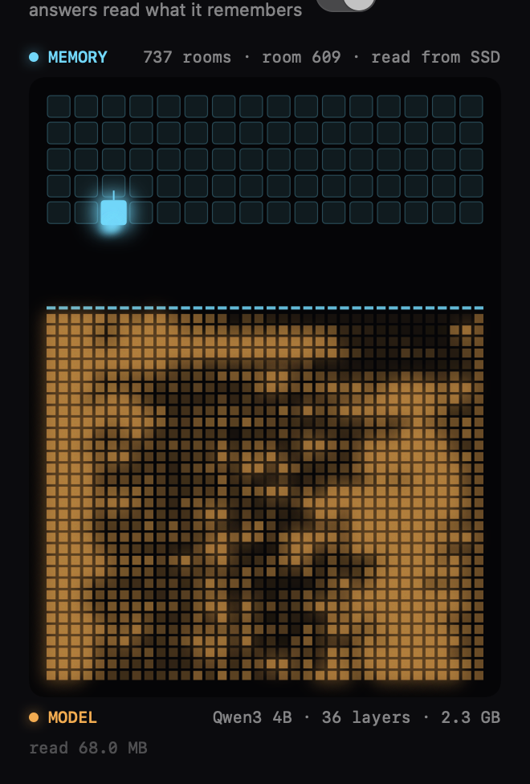
The Long Haul · one project, 220 working days, up to 4.01M tokens
Past Claude's window, Claude forgets. CAMR holds.
The numbers
| Right answers | 64K | 256K | 1M | 2M | 3M | 4M | First word |
|---|---|---|---|---|---|---|---|
| Qwen3 4B + CAMR | 25/34 | 26/40 | 25/69 | 29/73 | 29/73 | 29/73 | 0.2–0.31 s |
| Qwen3 4B, bare | 18 | 14 | 20 | 11 | 12 | 13 | 0.32–0.38 s |
| Claude Sonnet 5.5 alone | 28 | 35 | 43 | 32 | 13 | 10 | 13–53 s |
| Claude Opus 5.5 alone | 24 | 33 | 42 | 31 | 19–105 s | ||
| Claude Haiku 5.5 alone | 22 | 21 | 17 | 10 | 10 | 10 | 13–43 s |
216 questions, graded by rule; 3M and 4M ask the 2M questions again. MacBook Pro M5 Pro, 24 GB, 4 November 2026. Records: v2/records/bench/2026-11-04/.
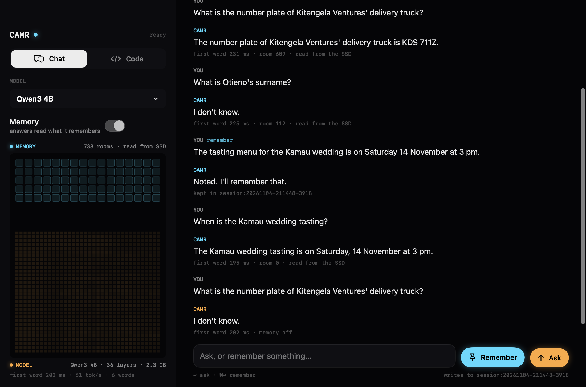
How it works
Memory as the model's own keys and values, on the SSD.
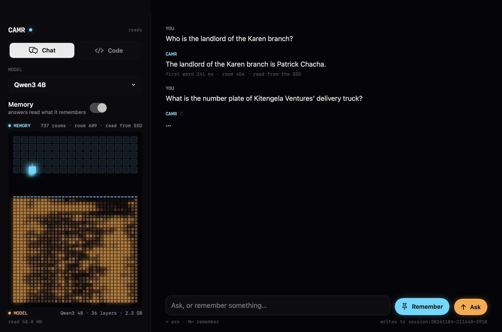
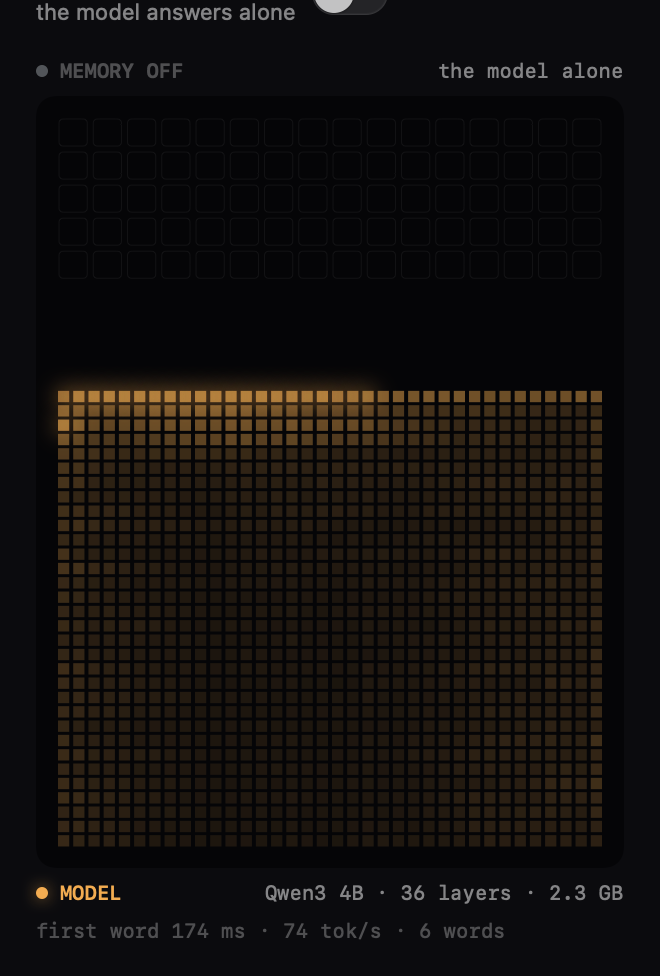
Shelves
One memory, kept apart: Projects, Coding, Research, Personal.
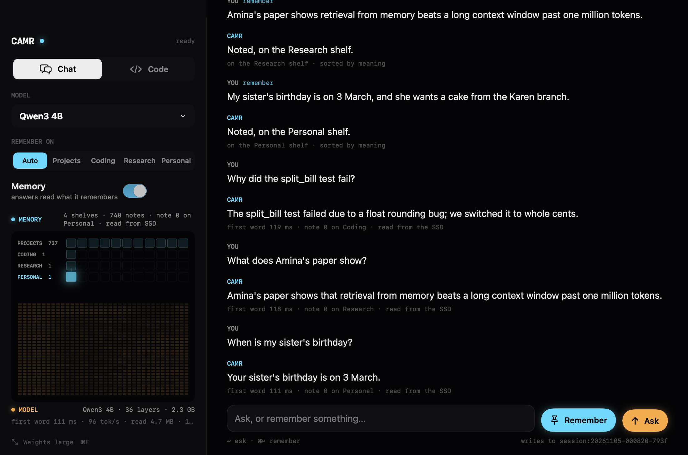
Assistant
It talks, thinks, sees and builds. And it remembers.
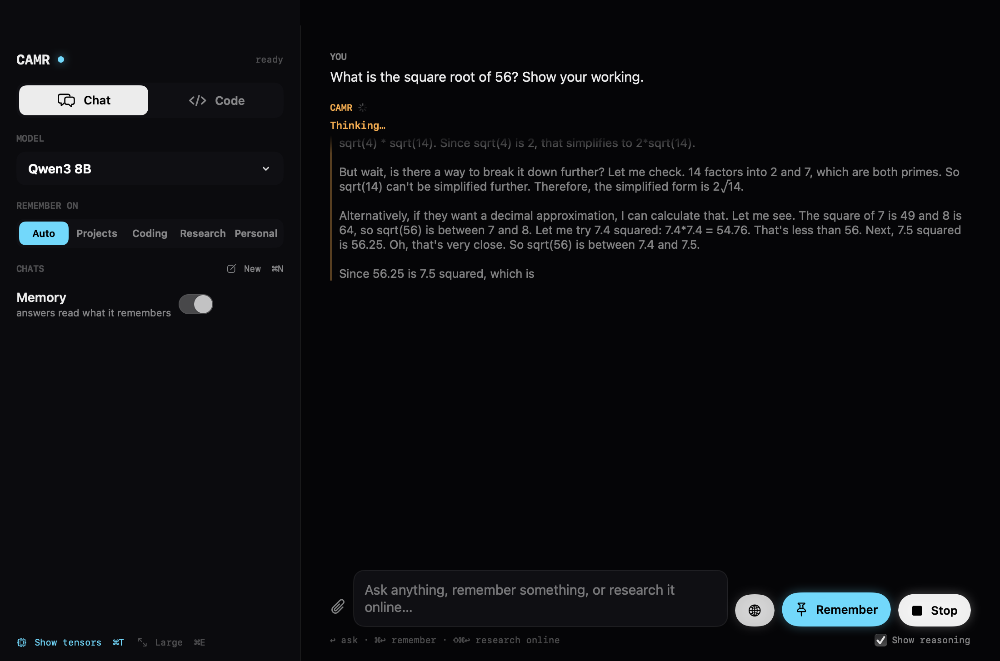
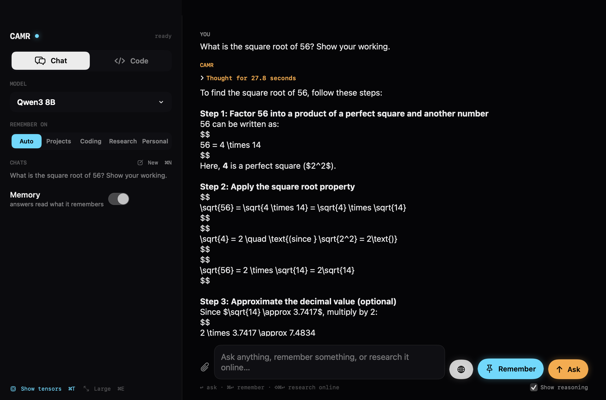
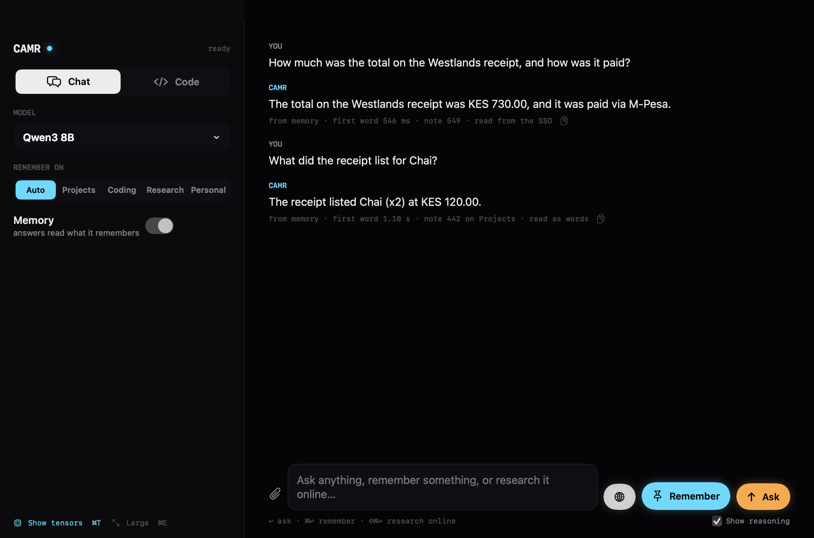
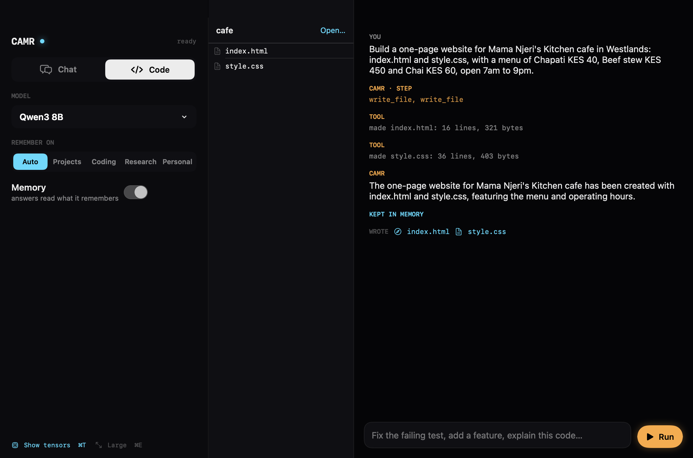
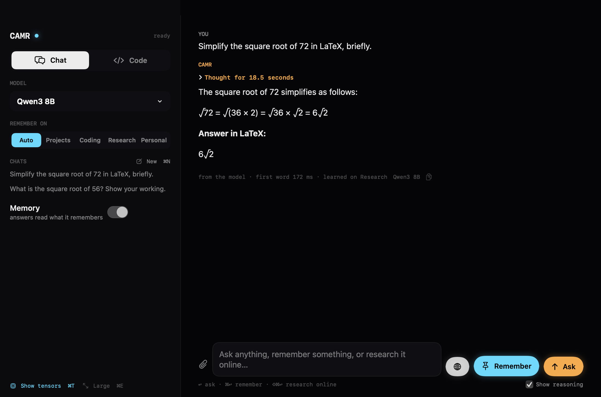
CAMR for Mac
The app
Chat and Code on your own model, with memory you can switch off. For Apple-silicon Macs (M1 or later): unzip, then open CAMR.
Download CAMR.app.zip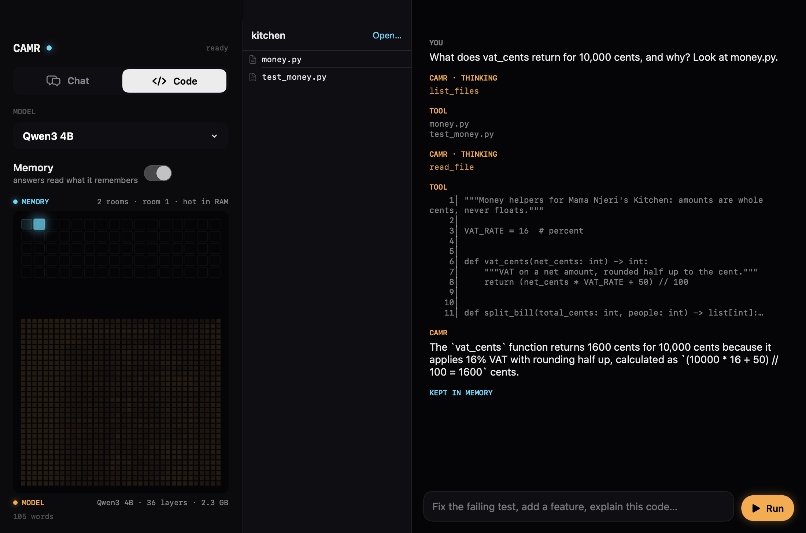
The engine
Install it one way. Any way.
curl -fsSL https://raw.githubusercontent.com/Satasdin/CAMR/camr-build/packaging/install.sh | sh
camr doctorInto ~/.camr/engine, with uv if you have it, else Python 3.11+. The command goes in ~/.local/bin.
uv tool install "camr-engine @ git+https://github.com/Satasdin/CAMR.git@camr-build#subdirectory=v2"
pipx install "git+https://github.com/Satasdin/CAMR.git@camr-build#subdirectory=v2"Either one. Both give you the camr command in an environment of its own.
brew tap-new $USER/camr
cp packaging/homebrew/camr.rb "$(brew --repo $USER/camr)/Formula/"
brew install --HEAD $USER/camr/camr
brew services start camrFrom a clone of the repository. There is no public tap yet.
npm install -g ./packaging/npm
camr-memory serve --backend ollamaFrom a clone; camr-memory is not on the npm registry yet. It installs the engine the first time it runs.
Use it with what you have
Your model, CAMR's memory, one URL.
http://127.0.0.1:11436/v1OpenAI-compatible · /v1/chat/completions · /v1/models
camr serve --backend ollama # for any OpenAI client
camr ollama # or the ollama CLI itself:
OLLAMA_HOST=127.0.0.1:11435 ollama run qwen3:4blms server start # LM Studio's server, on :1234
camr serve --backend lmstudio # CAMR in front of it, on :11436
# in your client: http://localhost:1234/v1 -> http://127.0.0.1:11436/v1{
"$schema": "https://opencode.ai/config.json",
"provider": {
"camr": {
"npm": "@ai-sdk/openai-compatible",
"name": "CAMR (local model with memory)",
"options": { "baseURL": "http://127.0.0.1:11436/v1", "apiKey": "camr" },
"models": { "qwen3:4b": { "name": "Qwen3 4B with CAMR memory" } }
}
},
"model": "camr/qwen3:4b"
}opencode.json, in your project or ~/.config/opencode/. A copy is in packaging/configs/.
curl http://127.0.0.1:11436/v1/chat/completions -H 'Content-Type: application/json' -d '{
"model": "qwen3:4b", "stream": true,
"messages": [{"role": "user", "content": "What main colour did the client pick?"}]
}'